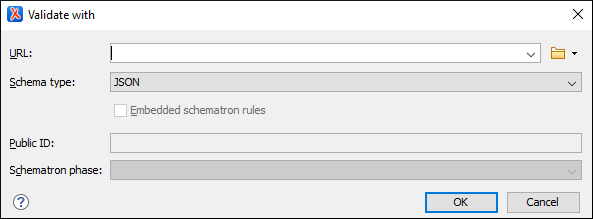

Associating a Schema Through a Validation Scenario
Oxygen XML Editor uses the rules defined in the detected schema to report errors and warnings during automatic and manual validations that help maintain the structural integrity of your JSON documents. Oxygen XML Editor includes built-in validation engines for validating JSON documents against a JSON Schema or Schematron schema. There are several methods that can be used to validate JSON document with a schema.
Configure a Validation Scenario and Specify the Schema
- Select the
 Configure Validation Scenario(s) from the
Configure Validation Scenario(s) from the  Validation toolbar drop-down menu, from the menu,
or from the Validate submenu when invoking the contextual menu on
a JSON file in the Project view).
Validation toolbar drop-down menu, from the menu,
or from the Validate submenu when invoking the contextual menu on
a JSON file in the Project view). - Click the New button to create a new validation scenario or the Edit button to modify an existing one.
- Add or configure validation units according to your needs. For details about all of the configuration options, see Creating a JSON Validation Scenario.
- Click the
 Specify Schema button to select the schema to be associated with the
validation unit.
Specify Schema button to select the schema to be associated with the
validation unit. - Click OK on both dialog boxes.
Result: The schema is now associated with that validation scenario whenever it is invoked.
Use the Validate with Action to Specify a Schema for Validating the Current Document
-
Select the Validation with action from the
Validation
drop-down menu on the toolbar (or
menu).Step Result: The Validate with dialog box is displayed:
Figure 1. Validate with Dialog Box This dialog box contains the following options:-
URL - Allows you to specify or select a URL for the schema.
It also keeps a history of the last used schemas. The URL must point to the schema
file that can be loaded from the local disk or from a remote server through
HTTP(S), FTP(S) or a custom protocol. You can specify the URL by using
the text field, the history drop-down, the
 Insert Editor
Variables button, or the browsing actions in the
Insert Editor
Variables button, or the browsing actions in the
 Browse drop-down
list.
Browse drop-down
list. -
Schema type - You can select one of the following two types
(other types of schema will not work with JSON documents):
- JSON - Used for validating JSON documents against a specified JSON Schema.
- Schematron - Used for validating JSON documents
against a specified Schematron schema. You can also select a
Schematron phase that you want to use for the
validation.Note: For proper error localization, the root element of the Schematron schema should include the
@queryBindingattribute with the value of xslt2 after the Schematron namespace declaration:<sch:schema xmlns:sch="http://purl.oclc.org/dsdl/schematron" queryBinding="xslt2">
-
URL - Allows you to specify or select a URL for the schema.
It also keeps a history of the last used schemas. The URL must point to the schema
file that can be loaded from the local disk or from a remote server through
HTTP(S), FTP(S) or a custom protocol. You can specify the URL by using
the text field, the history drop-down, the
- Select the schema to be associated with the manual validation.
- Click OK.
Result: The current document is validated using the schema you specified.
Use the Validate with Schema Action to Specify a Schema for Validating all Selected JSON Documents
- Select all the JSON documents you want to validate in the Project view.
-
Invoke the contextual menu (right-click) and select the Validate with Schema action from the Validate submenu.
Step Result: The Validate with dialog box is displayed:
Figure 2. Validate with Dialog Box This dialog box contains the following options:-
URL - Allows you to specify or select a URL for the schema.
It also keeps a history of the last used schemas. The URL must point to the schema
file that can be loaded from the local disk or from a remote server through
HTTP(S), FTP(S) or a custom protocol. You can specify the URL by using
the text field, the history drop-down, the Insert Editor
Variables button, or the browsing actions in the
Browse drop-down
list.
-
Schema type - You can select one of the following two types
(other types of schema will not work with JSON documents):
- JSON - Used for validating JSON documents against a specified JSON Schema.
- Schematron - Used for validating JSON documents
against a specified Schematron schema. You can also select a
Schematron phase that you want to use for the
validation.Note: For proper error localization, the root element of the Schematron schema should include the
@queryBindingattribute with the value of xslt2 after the Schematron namespace declaration:<sch:schema xmlns:sch="http://purl.oclc.org/dsdl/schematron" queryBinding="xslt2">
-
URL - Allows you to specify or select a URL for the schema.
It also keeps a history of the last used schemas. The URL must point to the schema
file that can be loaded from the local disk or from a remote server through
HTTP(S), FTP(S) or a custom protocol. You can specify the URL by using
the text field, the history drop-down, the
- Select the JSON schema that you want to use to validate all selected JSON documents.
- Click OK.
Result: The selected JSON documents are validated using the JSON schema you specified.